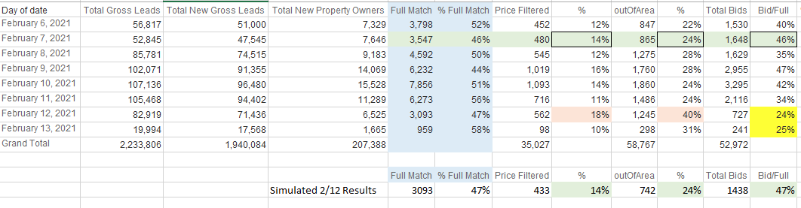
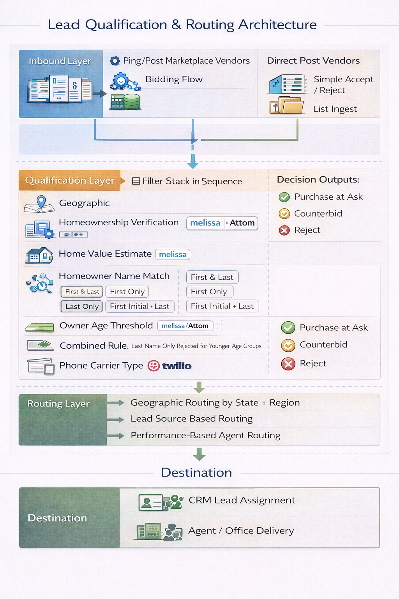
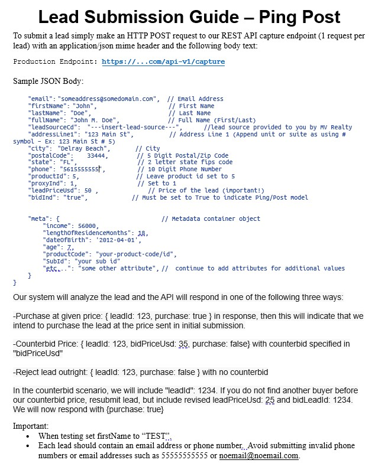
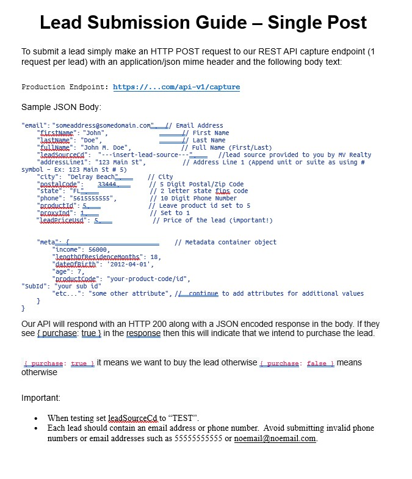
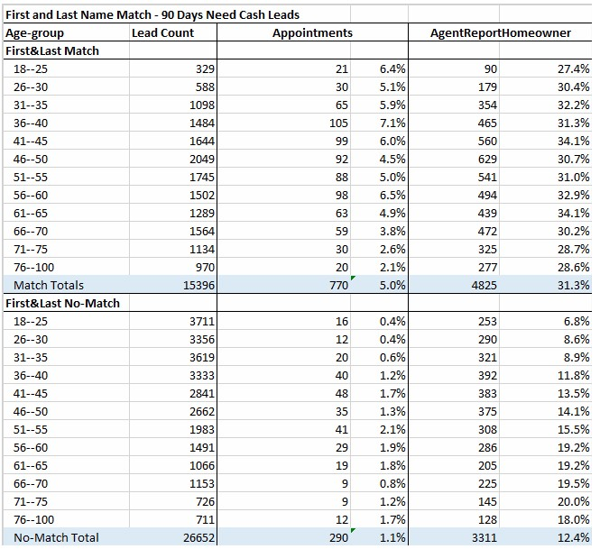

Residential PropTech · Platform & Integration Architecture
Operating and optimizing a real-time lead qualification engine that evaluated tens of thousands of inbound leads daily across 16+ vendor integrations — purchasing selectively based on a multi-layer filter stack that rejected 97.6% of total volume.
The Business Context
As the operation scaled nationally, lead acquisition became the operational heartbeat of the business. The model required a continuous supply of homeowner leads — people who owned their homes, had meaningful equity, and fell within the product's qualifying parameters. The cost of acquiring the wrong lead wasn't just the purchase price — it was the downstream sales effort wasted on contacts who could never convert.
The third-party lead marketplace offered volume and cost efficiency that other channels couldn't match. Dozens of vendors were generating homeowner inquiries at scale and selling them through real-time ping/post bidding marketplaces. The opportunity was real. So was the risk — bidding indiscriminately would have destroyed marketing ROI. The solution was a real-time qualification engine that evaluated every inbound lead against a multi-layer filter stack before deciding whether to bid, at what price, or whether to reject outright.
My Role
I was not the architect of this system — that credit belongs to the lead engineer. My role was the connective tissue between the business and its external partner ecosystem, and between the system's performance data and the leadership decisions that shaped its behavior over time.
I owned the external vendor relationships end to end — API documentation, lead source provisioning, test lead validation, troubleshooting. I monitored system performance, conducted ad hoc analysis when anomalies appeared, and presented findings to the CEO, COO, and head of marketing. I also owned the lead routing configuration operationally, later overseeing a direct report who managed day-to-day configuration as the vendor ecosystem grew.
The Scale
By early 2021 — before the system reached its peak — the engine was evaluating between 50,000 and 107,000 gross leads per day. Across a single week in February 2021 the system processed 2.2 million inbound lead submissions. Of those, approximately 9% were identified as new property owners meeting basic criteria. Of those, roughly 2.4% of total gross volume resulted in actual bids — meaning the qualification stack was rejecting approximately 97.6% of everything it saw before a purchase decision was made.
Daily Lead Volume & Qualification Funnel — February 2021

One week of operational data from early 2021 — before peak volume. Total gross leads ranged from 52k to 107k per day across 2.2M submissions. The Bid/Full column (bid rate as a percentage of full match leads) is the primary health metric. The February 12th anomaly (highlighted at 24%) triggered the diagnostic analysis below — where I decomposed contributing factors and projected recovery.
Lead Qualification & Routing Architecture

Complete system architecture — two inbound integration models (ping/post bidding flow and direct post), sequential filter stack with decision outputs (Purchase at Ask, Counterbid, Reject), routing layer for geographic and performance-based lead distribution, and final CRM delivery.
The Integration Architecture
The system supported two integration models to accommodate the range of marketing partners:
Ping/post bidding — the sophisticated integration used by partners operating in real-time lead marketplaces. A partner submitted a lead, the system evaluated it against the qualification stack in real time, and responded with one of three outcomes: purchase at the submitted price, counterbid at a lower price, or reject outright. If a counterbid was issued and no other buyer claimed the lead at full price, the partner could resubmit at the counterbid price for immediate purchase.
Direct post — the simpler integration for partners submitting leads for binary accept/reject decisions. Same qualification logic, simpler commercial flow.
I maintained formal API documentation for both integration models and served as the primary technical point of contact for all vendor onboarding. Most integration issues were field mapping errors or formatting inconsistencies I could diagnose by reviewing the raw JSON payload without escalating to engineering. At peak we were actively receiving leads from 16 vendors, having onboarded between 16 and 20 over the life of the program.
Ping/Post Integration Documentation

The ping/post specification distributed to marketplace partners — showing the real-time bidding flow with purchase, counterbid, and reject response logic.
Direct Post Integration Documentation

The direct post specification for simpler partner integrations — binary accept/reject with the same underlying qualification logic.
The Qualification Filter Stack
Every inbound lead traversed a sequential filter stack before a bid decision was made:
Data-Driven Filter Optimization
The qualification criteria weren't static — they evolved continuously based on performance analysis. The match type analysis illustrates how this worked. Performance data across 42,000 leads revealed a stark conversion difference: first and last name matches converted to appointments at 5.0% versus 1.1% for no-match leads. In the no-match group, the 18–25 age cohort converted at 0.4% — essentially zero. The hypothesis was straightforward: these were children of homeowners, not homeowners themselves. A rule rejecting last-name-only matches for younger age cohorts was implemented as a result.
Match Type Conversion Analysis — Age & Name Match Performance

Conversion analysis across 42,048 leads segmented by name match type and age group. First & Last Match: 5.0% appointment rate, 31.3% agent-reported homeowner rate. No-Match: 1.1% appointment rate, 12.4% homeowner rate. The 18–25 no-match cohort at 0.4% conversion is visible in the data — the signal that drove the combined age + match type rejection rule.
The Outcome
At peak the engine was evaluating tens of thousands of leads per day across 16 active vendor integrations, purchasing selectively based on a qualification stack that rejected the substantial majority of what it saw. The system protected marketing ROI by ensuring that every purchased lead met the minimum criteria for a viable sales interaction before money changed hands.
The vendor ecosystem it supported was the marketing supply chain for an outbound operation that at its peak supported over 230 simultaneous transfer specialists. The lead qualification engine and the outbound segmentation infrastructure were two halves of the same machine — one controlled what entered the database, the other controlled how it was worked.
Let's Talk
I'm currently exploring Senior Product Manager opportunities in platform, data systems, and operational automation — remote, nationwide.
Connect on LinkedIn →